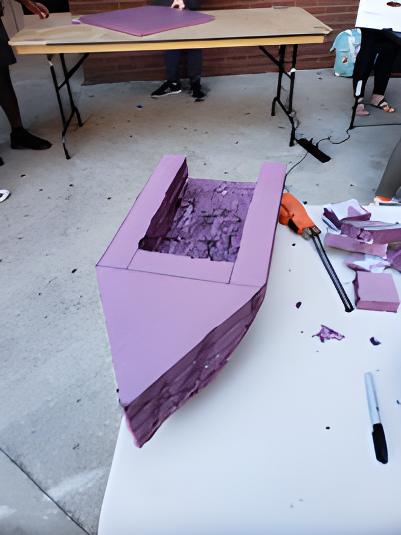
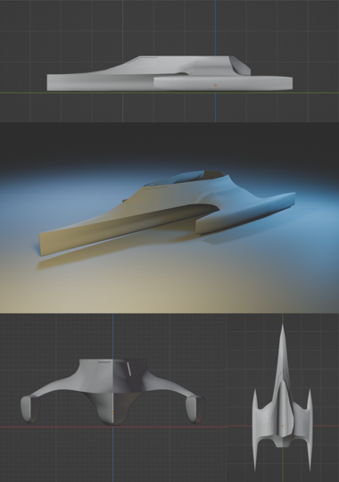
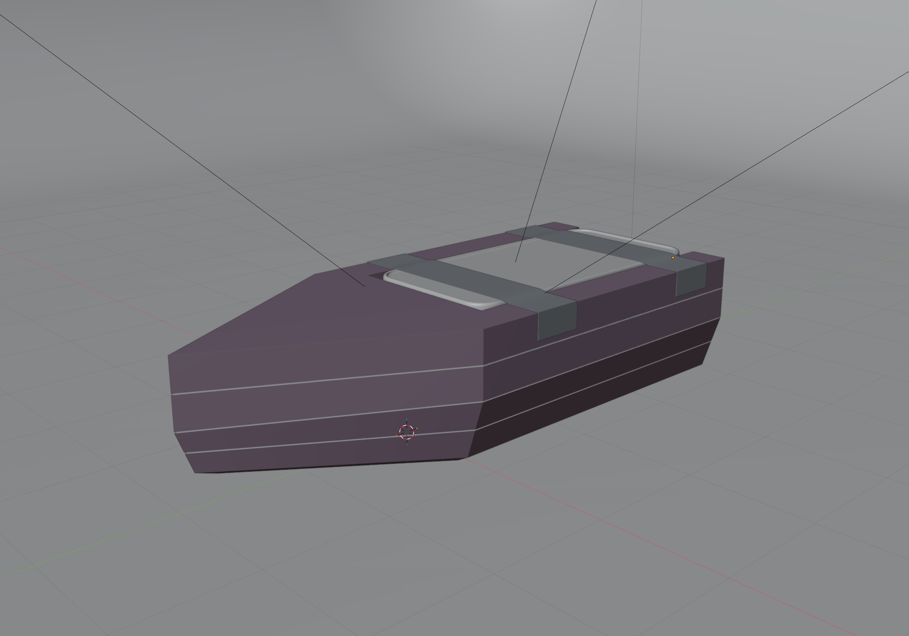
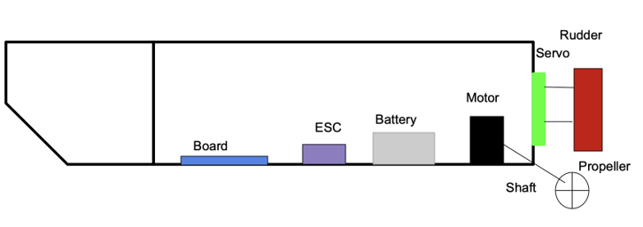
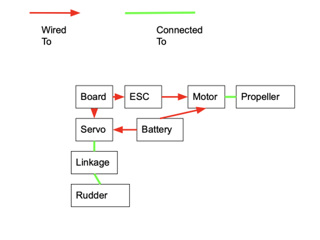

Engineering
Great Naval Orange Race
EGN 1007C Engineering Design Project · Spring 2024
Project context
Overview
The Great Navel Orange Race (GNOR) challenged our team to design, build, test, and race a self-guided, self-propelled boat capable of carrying an orange across UCF’s Reflecting Pond. The project combined mechanical design, propulsion, guidance, electronics, fabrication, and testing while working within a $100 budget, a 1 m³ size limit, and a five-minute race limit.
The Problem
The challenge was to create a boat that could autonomously navigate the Reflecting Pond, avoid course barriers, and safely deliver a navel orange to the finish line without remote control or assistance once the race began. The vessel also had to remain intact and keep the orange onboard throughout the run.
My Role
I created the team’s complete Blender model to evaluate hull geometry and component placement, including an earlier design concept that was later scrapped and can be seen in the Project Gallery below. I then adapted the design following a late competition rule change. I also led construction of the foam hull and component layout, focusing on stability and system integration, while assisting with C/C++ programming, electrical assembly, and testing.
Design & Process
Our original concept was a trimaran hull, chosen for maximum stability and modeled in Blender with the intent of 3D printing it. A late rule change prohibiting 3D-printed hulls forced us to restart with a simpler V-hull foam design. Early testing showed the V-hull was too unstable, so we flattened the bottom to improve stability. Heavier components were positioned toward the rear to help with balance and propulsion.
The final boat used a foam hull bonded with waterproof adhesive, with the electronics housed inside a sealed waterproof container. An RC battery powered a small motor and propeller, while a TI microcontroller controlled a rod-based rudder mechanism. We tested the boat repeatedly throughout development, refining flotation, steering, propulsion, and component placement. For autonomous guidance, we measured the intended course and programmed timed rudder movements to turn the boat at specific points along the route.
Challenges
The biggest challenge was waterproofing the electronics enclosure while still allowing the propeller and rudder shafts to move freely. The shafts needed to pass through the container without creating leaks or adding enough friction to interfere with steering or propulsion.
Solution / Iteration
To seal the shaft openings, we applied hot glue to both sides of the container, then gently rotated and moved the shafts until the glue released from their surfaces. This left a tight seal around the openings while still allowing the shafts to move with very little resistance.
Final Result
The final boat successfully combined the foam hull, sealed electronics enclosure, motor-driven propeller, rudder steering system, and autonomous timed guidance into a functional vessel. On race day, we successfully completed the course and delivered the orange to the finish, placing among the top 20 fastest teams out of roughly 400 competing teams based on completion time. The project also earned a 107% grade. And no, that is not a typo.
What I Learned
This project taught me how important iterative design and testing are when developing a physical system. Our original concepts changed significantly as new constraints and stability issues appeared, which we had to adapt to, and each round of testing helped guide the next design decision. I also gained experience integrating mechanical, electrical, and programming systems into a single working prototype, while learning how seemingly small details, such as component placement and waterproofing, can have a major impact on overall performance. I also learned that a simpler design that is reliable and well-tested can often outperform a more complicated design that looks better on paper.
Tools Used
Documentation / Visuals
Project Gallery




